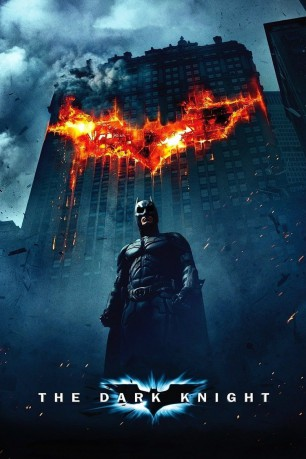

#714 Batman 2 - The Dark Knight
Auszeichnungen: 2 Oscars gewonnen für 6 Oscars nominiert 1 GoldenGlobes gewonnen 1 BAFTA-Awards gewonnen
 
 IMDB-Wertung: 9.0 / 10
IMDB-Wertung: 9.0 / 10  IMDB-TOP-Platzierung: 4
IMDB-TOP-Platzierung: 4  Metascore: 84
Metascore: 84 
Gemeinsam mit Bezirksstaatsanwalt Harvey Dent und Lieutenant James Gordon versucht der im Fledermauskostüm agierende Milliardär Bruce Wayne dem Verbrechen in Gotham City Einhalt zu gebieten. Wie aus dem Nichts taucht plötzlich ein psychotischer Superverbrecher auf - der Joker. In seiner wahnhaften Vision möchte er die Stadt in Chaos und Anarchie stürzen und Batman scheint der einzige, der ihn stoppen kann. Bis es zum endgültigen Show-Down kommt, wird aber viel Blut fließen und auch Menschen die Bruce Wayne nahe stehen, könnten Opfer werden.
Jahr: 2008
Dauer: 152 Minuten
FSK: 16
Land: USA Studio: Warner Bros.Tonspuren: DTS - ,
Untertitel: Deutsch, Englisch,
Auflösung: 1080p (1920x1080) Größe: 15769 MB
Genre: Action, Krimi, Drama, Thriller
Regisseur:  Christopher Nolan
Christopher Nolan
Drehbuch: Jonathan Nolan, Christopher Nolan, Christopher Nolan, David S. Goyer, Bob Kane
Soundtrack: James Newton Howard, Hans Zimmer
Darsteller:
Datei: X:\Comic-Filme\Batman\Batman 2 - The Dark Knight (2008, FSK16, 1920x1080).mkv seit 16.03.2015
Festplatte: Comicverfilmungen+MusikCD
 Es gibt insgesamt 13 Filme in der Gruppe 'Comic-Filme\Batman'
Es gibt insgesamt 13 Filme in der Gruppe 'Comic-Filme\Batman'